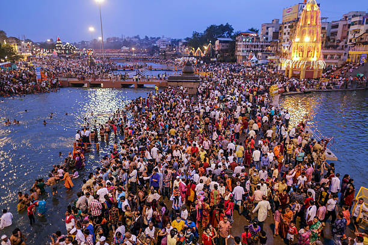
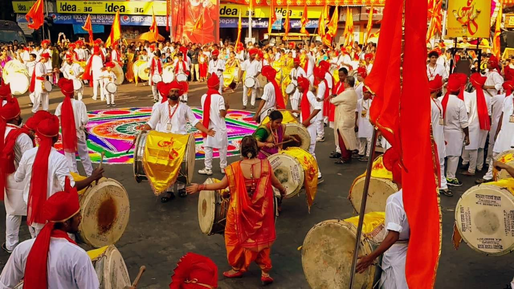
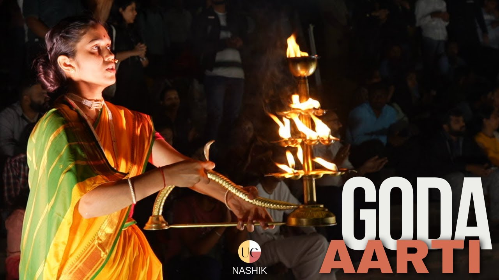

🎭 Cultural Heritage of Nashik

Kumbh Mela
One of the largest religious gatherings in the world, held every 12 years in Nashik, attracting millions of devotees.

Ganesh Chaturthi
A grand festival in Nashik with colorful processions, prayers, and traditional music celebrating Lord Ganesha.

Goda Aarti
A mesmerizing evening ritual performed on the banks of the Godavari River, featuring devotional songs, lamps, and spiritual ambiance.

Pandav Leni Caves
Ancient Buddhist caves featuring intricate carvings, reflecting Nashik's deep cultural and historical roots.